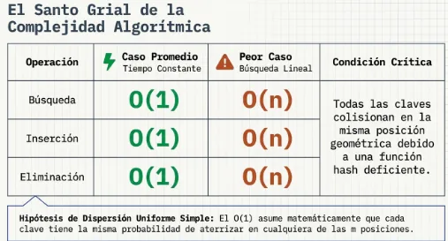

Duración: 6 horas
Panorama general · ¿En qué consiste una tabla Hash?
Una tabla Hash es una estructura diseñada para localizar información rápidamente. En lugar de recorrer todos los elementos uno por uno, toma una clave, la procesa mediante una función hash y obtiene directamente un índice de la tabla. Cuando dos claves producen el mismo índice aparece una colisión, que puede resolverse mediante encadenamiento, sondeo lineal o sondeo cuadrático.
Clave
Dato que identifica al elemento: matrícula, número de cuenta, código, nombre o cadena.
Función Hash
Transforma la clave en un valor numérico que después se convierte en un índice.
Índice
Posición de la tabla donde se intenta almacenar o localizar el elemento.
Colisión
Ocurre cuando dos claves diferentes producen el mismo índice y requieren una estrategia de resolución.
Eficiencia de las tablas Hash
Su principal atractivo es que la búsqueda, inserción y eliminación pueden realizarse en tiempo promedio O(1). Esto significa que, con una buena función hash y una tabla correctamente dimensionada, el tiempo de acceso no crece de forma importante aunque aumente la cantidad de registros.
| Operación | Caso promedio | Peor caso | ¿Qué provoca el peor caso? |
|---|---|---|---|
| Búsqueda | O(1) | O(n) | Muchas claves terminan en la misma zona o cadena. |
| Inserción | O(1) | O(n) | La tabla está muy ocupada o existen demasiadas colisiones. |
| Eliminación | O(1) | O(n) | Se requiere recorrer una cadena o una secuencia extensa de sondeo. |

Aplicaciones en la vida real
Lenguajes de programación
Diccionarios, mapas y conjuntos utilizan tablas hash para localizar claves rápidamente.
Caché y memoria
Permiten recuperar datos frecuentes sin volver a realizar búsquedas o cálculos costosos.
Bases de datos
Los índices hash pueden acelerar búsquedas exactas de claves en grandes colecciones de registros.
Compiladores
Las tablas de símbolos relacionan identificadores con información como tipo, dirección o alcance.
6.1 · ¿Qué es una tabla Hash?
¿Qué es?
Una tabla hash almacena elementos en posiciones calculadas a partir de una clave. La posición se obtiene mediante una función hash.
¿Para qué sirve?
Permite insertar, buscar y eliminar información con tiempos promedio cercanos a O(1) cuando la distribución de claves es adecuada.
Conceptos básicos
- Clave
- Índice
- Función hash
- Colisión
- Factor de ocupación
- Rehashing
Usos
- Diccionarios y mapas.
- Índices de archivos.
- Cachés.
- Tablas de símbolos.
- Búsquedas rápidas.

¿Qué es una función Hash?
Una función hash recibe una clave y produce un número entero que se usa para calcular una posición dentro de la tabla. La meta es distribuir las claves de forma uniforme.
Clave numérica
Una técnica sencilla consiste en aplicar módulo con el tamaño de la tabla.
ALGORITMO Hash_Numerico
ENTRADA: clave, tamañoTabla
indice ← clave MOD tamañoTabla
RETORNAR indice
FIN ALGORITMOclave = 1234
tamaño = 13
índice = 1234 MOD 13 = 12
Factor de ocupación Hash
El factor de ocupación o factor de carga indica qué tan llena está la tabla.
α bajo
Hay pocas colisiones, aunque puede desperdiciarse memoria.
α alto
Aumentan las colisiones y disminuye el rendimiento.
Direccionamiento abierto
Suele ser conveniente mantener α por debajo de 0.7.
Encadenamiento
Puede soportar α mayor que 1 porque cada posición puede contener una lista.
Colisiones
Existe una colisión cuando dos claves distintas generan el mismo índice.
35 MOD 10 = 5
Ambas claves desean ocupar la posición 5.

Encadenamiento para manejo de colisiones
Cada posición de la tabla guarda una lista enlazada. Si varias claves caen en el mismo índice, se agregan a esa lista.
ALGORITMO Insertar_Encadenamiento
indice ← Hash(clave)
Crear NUEVO nodo
NUEVO.clave ← clave
NUEVO.siguiente ← tabla[indice]
tabla[indice] ← NUEVO
FIN ALGORITMO
Sondeo lineal
Si la posición calculada está ocupada, se revisa la siguiente posición y se continúa hasta encontrar un espacio libre.
ALGORITMO Insertar_Lineal
indice ← Hash(clave)
intento ← 0
MIENTRAS tabla[indice] esté ocupada
intento ← intento + 1
indice ← (Hash(clave) + intento) MOD tamañoTabla
FIN MIENTRAS
tabla[indice] ← clave
FIN ALGORITMO
Sondeo cuadrático
En lugar de revisar posiciones consecutivas, se generan saltos cuadrados: 1², 2², 3²...
ALGORITMO Insertar_Cuadratico
indiceBase ← Hash(clave)
i ← 0
MIENTRAS exista colisión
indice ← (indiceBase + i * i) MOD tamañoTabla
i ← i + 1
FIN MIENTRAS
tabla[indice] ← clave
FIN ALGORITMO4 + 1² → 5
4 + 2² → 8
4 + 3² → 13 MOD tamaño
DJB2 · Hash para claves alfanuméricas
DJB2 procesa una cadena carácter por carácter. Parte de 5381 y en cada paso multiplica el hash acumulado por 33 y suma el código del carácter.
ALGORITMO Hash_DJB2
hash ← 5381
PARA cada caracter EN cadena
hash ← hash * 33 + codigo(caracter)
FIN PARA
indice ← hash MOD tamañoTabla
RETORNAR indice
FIN ALGORITMOhash * 33 = (hash << 5) + hash

Rehashing
Cuando la tabla alcanza un factor de ocupación elevado, se crea una tabla mayor y se vuelven a calcular los índices.
ALGORITMO Rehashing
SI factorOcupacion > LIMITE
Crear nuevaTabla con mayor tamaño
PARA cada elemento DE tablaAnterior
nuevoIndice ← Hash(elemento.clave) MOD nuevoTamaño
Insertar elemento en nuevaTabla
FIN PARA
tabla ← nuevaTabla
FIN SI
FIN ALGORITMOAplicación: archivos binarios indexados con Hash
La tabla hash puede funcionar como índice rápido para localizar registros almacenados en un archivo binario. En lugar de guardar todo el registro, puede guardar la posición física donde se encuentra.
Crear índice
REGISTRO Alumno
matricula
nombre
carrera
FIN REGISTRO
indice ← Hash(matricula)
tablaHash[indice].clave ← matricula
tablaHash[indice].posicion ← posicionEnArchivoBuscar registro
indice ← Hash(matricula)
posicion ← BuscarEnTabla(indice, matricula)
SI posicion existe
Mover archivo a posicion
Leer registro
FIN SISimulador de tabla Hash
Inserta claves numéricas o alfanuméricas y observa cómo se calcula el índice, cómo aparece una colisión y cómo se resuelve.
Cuestionario · Tablas Hash
Una tabla hash transforma una clave en un índice para acceder rápidamente a la información. El rendimiento depende de una buena función hash, de un factor de ocupación controlado y de una estrategia adecuada para resolver colisiones.